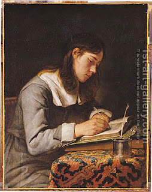

Bava Batra 15 - Who Wrote the Books of Scripture?
Moses wrote his book (the Pentateuch) and the Book of Job; Joshua wrote his book and the last eight verses of the Pentateuch, which describe events that took place after Moses' death.
Samuel wrote his book, and the Book of Judges and Ruth. David wrote the Book of Psalms, where he included the work of ten other authors.
Hezekiah and his assistants wrote the books of Isaiah, Proverbs, Song of Songs and Ecclesiastes; the Men of the Great Assembly - a group of 120 Sages active during the first years of the Second Temple - wrote the Books of Ezekiel, the Twelve Prophets, Daniel, and the Scroll of Esther.